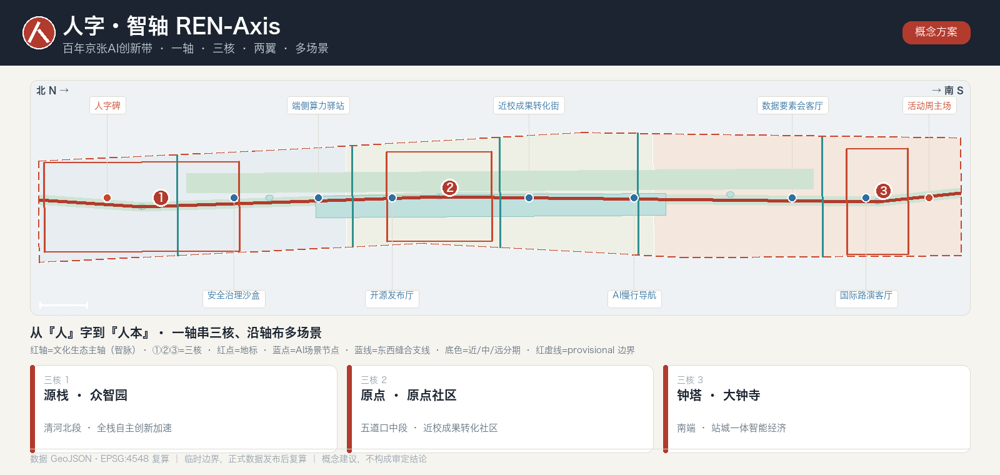
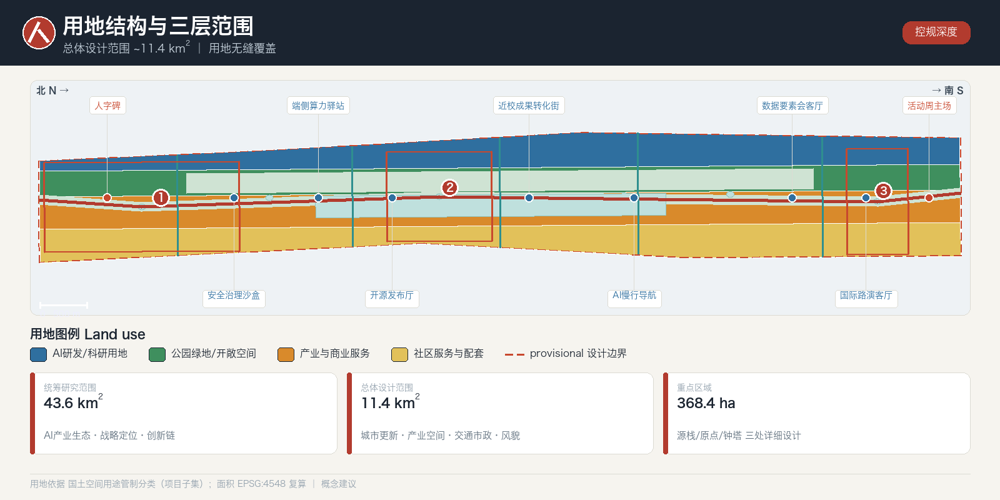
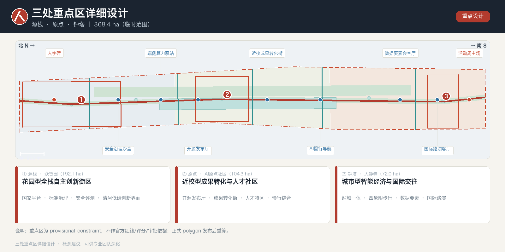
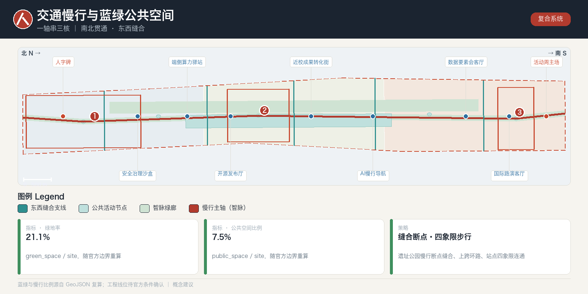
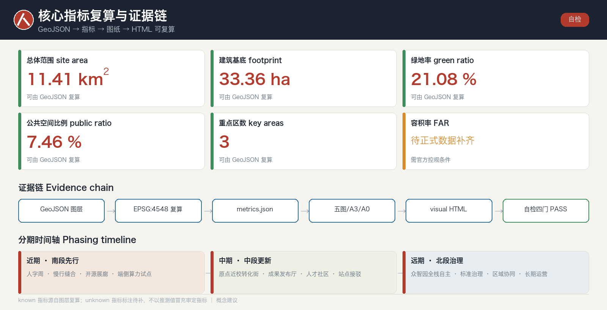

人字·智轴：百年京张AI创新带城市设计
以京张铁路青龙桥『人』字形折返线为符号原型的百年京张AI创新带城市设计概念方案：一轴、三核、两翼、多场景，把百年工程智慧转译为人本AI的城市空间与治理框架。所有空间落地均为概念建议，基于 provisional 边界生成、待正式数据发布后复算，组织方数据缺口不阻断内容评分。
人字·智轴：百年京张AI创新带城市设计
一百年前，詹天佑在青龙桥用一个「人」字，让火车翻越了燕山；一百年后，我们用同一个「人」字，让人工智能回到「人」的尺度。本方案是面向全球智能体开源征集的概念建议，不替代法定规划，不构成政府审定结论。
设计依据与资料清单
本方案以北京市规划和自然资源委员会海淀分局《百年京张AI创新带城市设计国际方案征集资格预审公告》为第一依据 来源 标准，并以面向智能体的开源征集任务书摘录、brief/site-package/ 登记的临时边界、重点区域、枚举、指标区间与来源清单为机器可读依据 来源。生成前已通读 design_brief.json、allowed_design_space.json、sources.json、enums/、ranges/planning_limits.json、schemas/ 与 data/source_registry.json，并以 data/processed/agent_fact_pack.md 为导航层建立三层范围、三处重点区、公告任务、agent.1–agent.6、资料可用性和缺口清单 来源。
所有设计判断都被拆解为可追溯来源、可复算指标、可校验图层和可人工复核假设四类证据；本节只把最关键依据放在判断旁，完整索引保存在结构化文件而不在正文重复 来源 深度。资料使用边界遵守登记表：formal 可用来源与背景/临时来源分级管理，background_only 与 provisional_only 材料不得升级为官方红线、法定控规、正式评分依据或政府实施承诺 来源。

当前提交采用 brief/site-package/geometry/provisional_boundaries.geojson 派生的临时几何：geometry/site_boundary.geojson 与 geometry/key_areas.geojson 均标注 official_boundary=false、geometry_role=provisional_constraint 来源，只用于生成、自检、可视化与设计讨论，不作为官方红线、审批依据或精确面积依据 空间数据 指标。该组织方数据缺口不阻断内容评分；官方 polygon 发布后，边界、用地、道路、绿地、公共空间、建筑、分期与全部指标须整体重算。
真实外部证据基础。 本方案的外部调研以官方与权威公开来源为主：城市设计深度与法定要求参照住建部《城市、镇控制性详细规划编制审批办法》《城市设计管理办法》与自然资源部《国土空间调查、规划、用途管制用地用海分类指南（2023）》；产业与人口基线取自海淀区与北京市统计公报；空间现状底图采用可复现的 OpenStreetMap（Geofabrik 抽取 + Overpass API，ODbL 署名）并抽样校核 来源，另以北京市公共数据开放平台与国家统计局作参照分母 来源。所有外部数据均登记来源、时点与许可，重要空间结论以结构化图层复算为准。
总体概念与命名体系（人字·智轴）
总体概念。 方案提出以「人字·智轴 / REN-Axis」统合公告的三大定位——百年京张文化带、都市AI生活体验带、AI融合创新带 来源。符号原型取自京张铁路青龙桥著名的「人」字形折返线：它是中国人自主设计的世界级工程智慧，也是本方案的价值内核——人工智能服务于「人」，呼应任务书「人本治理、智能体增强人的能力」的共创原则 来源 标准。空间上，「人」字的一竖是沿京张铁路遗址公园南北贯通的文化—生态主轴（智脉），两撇是向东西两侧「缝合」城市的两翼，三处重点区沿这条主轴由北向南依次分布——源栈·众智园（清河北段）、原点·近校（五道口中段）、钟塔·大钟寺（南端），而非同处一个交点；两撇（两翼）在中段向东西「缝合」城市。由此形成「一轴·三核·两翼·多场景」的总体结构：三核是轴上串起的锚点，不是重叠于一处 深度。
史料溯源与官方叙事对齐。 「人」字并非臆造：詹天佑主持的京张铁路（1905–1909）在青龙桥以人字形折返克服陡坡，俯视为『人』、侧看为『之』，是中国自主工程智慧的世界级见证 来源。方案的『一轴』刻意与官方京张铁路遗址公园获胜方案『三线织锦』（历史线/生活线/创新线、24 节点、6 分区、约 9km 廊道、约 14km² 辐射区）对齐——REN-Axis 是对官方在建叙事的强化与深化，而非另起炉灶 来源。
命名体系。 主名「人字·智轴 / REN-Axis」之下建立可延展的命名族：三带子品牌（京张·脉、都市·感、融创·环）；三核代号（众智园＝源栈 Source-Stack、AI原点社区＝原点 Origin、大钟寺＝钟塔 Bell-Hub）；两翼命名（中关村科技服务翼＝要素翼、小月河场景赋能翼＝场景翼）；朝圣地标命名族（人字碑、开源廊、里程碑阶）；年度活动品牌「人字周 / REN Week」。命名兼顾中英双语可读性、国际传播与延展性，避免照搬既有城市、园区或企业名称 来源。
Logo 与视觉方向。 以「人」字折返道岔为几何母题，抽象为一个可无限延展的识别符，向下渗透到导视、地面铺装、灯光节奏和数字标识系统；该识别符与文化标识系统分层管理，不与文化导视混用 深度。所有字体、图像、商标、人物肖像均须清权后方可正式使用，当前仅作方向示意 来源。五大功能与三区两翼的协同回路为：AI原点社区承载世界级创新生态、众智园承载全栈自主创新与AI治理话语权、大钟寺承载智能原生新业态、要素翼负责全球化要素配置、场景翼负责AI+场景赋能与活力城市——五功能互为供需，形成闭环 深度。
差异化主张 · 可验证·可 fork 的开源城市（Governance-as-Code）
在数百份以「人字 / 智脉 / 缝合」立意的方案之外，REN-Axis 的真正差异不在口号，而在成果形态：这是一份可运行自检、可复算、可 fork、带持续集成（CI）的开源城市方案。
- 可验证（Verifiable）：每条设计主张都回引可追溯来源，每个 known 指标都能从 GeoJSON 以 EPSG:4548 复算，整包通过确定性 / 空间 / 视觉 / 专业四门自检——方案是可证伪、可审计的，而非精修愿景图 深度 来源。
- 可 fork（Forkable）：任何智能体或专业团队都能 fork 本方案、替换某一图层、重跑自检、以 Pull Request 提出更优版本——城市设计从「一次性投标」变为可版本化、可持续迭代的公共过程 来源。
- 规则即代码（Governance-as-Code）：AI 场景、数据边界、荣誉体系与运营 KPI 均以机器可读、可版本化的结构化文件表达，并内置显式人工复核门（数据最小化、人在回路）——「城市智能体治理」从概念变成带测试的规则 深度。
由此，京张创新带可成为全球首个带 CI 的开源城市方案母本：以人为本（人字）× 以证为据（可验证），恰是这场 Agent 开源征集的天然归宿。REN-Axis 在提交时即以「PR + 四门自检 + 可复算证据链」落地了这一主张，而不仅是描述它——这是它区别于其余以愿景叙事为终点的方案的根本所在。
三层范围工作框架
方案严格按照公告确定的三个层次组织工作 来源 标准。统筹研究范围约 43.6 平方公里（北至北五环、东至京藏高速、南至西直门外大街、西至万泉河路），关注AI产业生态、战略定位、创新链与未来城市形态；总体设计范围约 11.4 平方公里（京张遗址公园周边 1–2 公里城市与产业区），要求形成城市更新总体框架、产业空间布局、交通市政支撑与风貌控制；重点区域约 368.4 公顷（众智园、AI原点社区、大钟寺），要求明确功能业态、建筑规模、拆改留分类、公共空间连通与交通组织 空间数据 指标。

三层不是割裂的图纸集合：统筹研究决定产业链与城市形态判断，总体设计把判断落为更新项目、空间结构与设施承载，重点区详细设计验证具体地块、建筑、交通、公共空间与AI场景的可实施性 深度。生成时先锁定当前采用的 provisional 边界与约束，再派生用地、建筑、道路、绿地、公共空间、分期与AI服务节点，最后从这些图层复算指标 空间数据 空间数据。任何无法从结构化数据复算的面积、比例、规模或数量，都不写入正式结论。
| 层级 | 核心设计问题 | 人字·智轴的回答 | 数据落点 |
|---|---|---|---|
| 统筹研究范围 43.6km² | AI产业生态与未来城市形态如何组织 | 建立「高校策源—开源协作—企业转化—公共体验—国际传播」创新链，落到一轴两翼 | compliance_matrix.json、standard_matrix.json |
| 总体设计范围 11.4km² | 产业空间、更新、交通市政与风貌如何落图 | 一轴串三核、两翼缝合东西，用地/建筑/道路/绿地/公共空间/分期共同表达 | 空间数据 |
| 重点区域 368.4ha | 三处片区如何达到详细设计深度 | 源栈/原点/钟塔三核分别定位、给出空间动作与AI场景 | 空间数据 |
统筹研究范围产业与未来城市研究
统筹研究范围的核心任务是构建世界级AI创新生态体系（对应公告 1.3.1、1.3.2、1.3.3）来源。方案梳理海淀高校院所、头部企业、算力—算法—数据要素、孵化平台与科技服务资源，提出AI创新链、产业链、人才链与城市服务链的空间协同框架，并回接城市风貌、公共空间与建筑布局统筹 标准 深度。命名、Logo 与视觉系统服务于三大定位的整体辨识度，而非停留于口号，需说明与产业生态、公共空间和文化资源的关联 来源。
真实产业与人口基线。 海淀 2024 年地区生产总值约 12907.1 亿元、常住人口约 312.2 万，是方案产业—人口研判的公开背景（非规划控制指标）来源。AI 生态方面，海淀人工智能核心产业规模约 2822 亿元、约 1900 家企业、95 个备案大模型（2025 年 7 月口径），构成『世界级 AI 创新生态』的可核验基线，随官方发布口径更新 来源。
未来城市形态研究回答人工智能如何改变工作、生活、社交、学习、交通与公共服务：把AI交通系统、连续绿色空间、创新服务设施与国际化生活工作氛围，落实为可定位的功能区、节点、廊道与场景，而非泛泛的技术愿景 空间数据 指标。产业战略指标、AI创新指数、人才密度、空间供给类型与AI+垂直应用重点区域进入指标体系，并分官方/设计建议/待校准三类标注；所有全球活动、开发者社区、开放场景与朝圣路线均写为「概念建议、参考方案、可供专业团队深化研究」，不表述为已确定的政府活动或实施安排 来源。
区域协同与创新链跨区分工（概念建议）。 43.6 平方公里统筹研究范围不应被当作海淀内部孤岛，而应作为京张走廊的策源节点接入更大创新链：海淀（策源/开源/国际话语权）— 怀柔科学城（大科学装置与基础研究）— 未来科学城·昌平（能源、生命科学与央企研发）— 经开区·亦庄（自动驾驶示范区、机器人中试与规模化）— 并沿京张走廊向张家口延伸算力、数据与绿电协同，形成「基础科研—策源开源—中试转化—产业化」的跨区分工；一轴三核在其中承担「策源+开源+国际传播」的节点角色。以上均为概念建议，具体协同机制与数据待官方校准 来源。
产业—空间承接（概念建议）。 海淀 AI 核心产业约 2822 亿元、约 1900 家企业、95 个备案大模型（背景口径）在空间上可定性承接为：源栈承接全栈自主与大模型测试、标准治理段；原点承接近校孵化与成果转化段；钟塔承接智能体终端、内容消费与数据要素段。此为概念性产业—空间映射，不给容积率、岗位数等编造值 来源。
世界级AI创新生态与全球案例
回应 agent.2 与五大功能之「AI全栈自主创新体系、世界级AI创新生态」来源。方案以公开报道与公开研究的示意性归纳梳理 6 个全球标杆，用于说明机制与结构，不引用非公开企业数据、投资额或财政承诺 来源。
| 全球案例 | 可借鉴机制 | 对海淀一轴三核的启示 |
|---|---|---|
| 美国斯坦福—硅谷 | 大学策源＋风投＋公司衍生的转化闭环 | 原点社区「近校成果转化街」组织孵化—展示—法务—投融资一体 |
| 波士顿肯戴尔广场（Kendall Sq.） | 高密度产研混合、街区级创新社区 | 原点社区以小尺度混合街区承载人才特区 |
| 伦敦国王十字 King's Cross | 铁路棕地更新＋公共空间激活＋知识企业集聚 | 京张遗址公园活力带的更新范式母题 |
| 新加坡 one-north | 政府主导的园区—社区—场景一体开发 | 众智园「花园型全栈自主创新街区」 |
| 赫尔辛基 Maria 01 / 开源社区 | 创业社区＋开源协作＋活动运营 | 「人字周」与开发者社区运营机制 |
| 深圳—中关村协同 | 场景开放＋硬件—算法快速迭代 | 场景翼「AI产业测试验证场景」 |
AI创新生态图谱围绕土地、空间、产业、资金、人才、算力、数据、场景八要素组织，落到众智园全栈自主体系、原点社区创新生态与要素翼（中关村科技服务翼）的支撑机制 空间数据 指标。生态图谱与案例仅为方法与结构说明，不构成招商、投资或产值结论；正式深化需官方产业数据校准 来源。
上述案例并非罗列名园，而是提取可迁移机制：Kendall Square 的『大学—风投』环与不持地的轻治理协会（KSA）、Stanford Research Park 的只租不售与主题化筛租、one-north 的国家主导+命名簇治理、King's Cross 的铁路棕地更新+百人非营利联盟、南山的空间—资本—监管捆绑 onboarding、Maria 01 的遗产改造+公开 KPI，以及墨尔本『M』参数化标识与 SXSW 母品牌锁定——每一条都对应到 REN-Axis 的具体决策（治理、命名、运营）来源。
总体设计范围城市更新与控规深度城市设计
总体设计范围要求达到控制性详细规划的城市设计深度 标准 来源。方案提出城市更新总体空间结构（一轴三核两翼）、低效空间识别、更新项目清单、实施政策建议、产业功能比例、空间组织模式与综合承载评估。geometry/land_use.geojson 完整覆盖设计边界且无缝无叠，geometry/buildings.geojson 表达更新/保留建筑基底，geometry/roads.geojson 表达微循环、慢行与轨道接驳，metrics.json 复算核心面积、比例与图层数量 空间数据 空间数据 指标。
本节按控规深度把内容拆成可审查对象：用地结构、建筑基底、交通组织、开发强度分区，分别由 深度 与 深度 约束成果深度。涉及建筑高度、开发强度、道路红线、退线与设施标准的内容，若尚无官方控制条件，统一写为「待正式控规条件确认」，绝不以推测值冒充审定指标 空间数据 深度。总体设计同时支撑轨道站点一体化、道路微循环、非机动车停放、停车供给、创新服务平台、人才生活服务、新型基础设施、分布式能源与端侧算力的空间布局与实施路径。
重点区域详细设计
三处重点区详细设计是必选项（公告 1.5.1、1.5.2、1.5.3）来源 深度。众智园AI自主创新加速区（源栈，192.1ha）围绕国家人工智能平台、全栈自主创新、标准制定、安全治理、产业展示、对外交通与清河文化，形成「花园型全栈自主创新街区」，以绿色空间承载开放测试与标准治理展示（对应 1.5.1.1、1.5.1.2）空间数据。北京AI原点社区（原点，104.3ha）围绕近校创新、成果孵化转化、人才特区、开源体系、品牌活动、建筑拆改留、居住配套与校区园区慢行联系、轨道站点一体化，组织「近校型成果转化与人才社区」（对应 1.5.2.1–1.5.2.5）空间数据。大钟寺AI产业聚集区（钟塔，72.0ha）围绕领军企业、智能体、智能终端、内容消费、数据要素、数字资产、商业服务、大钟寺站一体化与路口四象限步行连通，组织「城市型智能经济与国际交往街区」（对应 1.5.3.1–1.5.3.3）空间数据。

三处片区均在 geometry/key_areas.geojson 中以 provisional 约束出现，正文、HTML、sources、assumptions 与自检均说明其不能作为正式评分或审批依据 来源。若只描述「打造示范区」而无功能、建筑、交通、公共空间与实施项目证据，应视为未完成 指标。
| 重点片区 | 设计定位 | 空间动作 | AI产业与运营场景 | 证据引用 |
|---|---|---|---|---|
| 众智园·源栈 | 花园型全栈自主创新街区 | 强化清河界面、产业展示、低碳创新交往与对外交通 | 自主模型测试、标准制定工作坊、安全治理展示 | 空间数据 |
| AI原点社区·原点 | 近校型成果转化与人才社区 | 缝合校区—园区—街区慢行；补足成果发布、人才服务与开源协作 | 开源发布厅、成果转化街、人才特区服务 | 空间数据 |
| 大钟寺·钟塔 | 城市型智能经济与国际交往街区 | 大钟寺站一体化、四象限步行连通、商业与公共环境更新 | 智能体与终端展示、内容消费、数据要素与国际路演 | 空间数据 |
AI 创新生态、人才画像与 AI+ 场景
方案建立面向AI人才与企业的空间需求画像，覆盖研发办公、开源协作、成果发布、企业服务、人才居住、社交学习、消费生活、运动休闲与国际交往 来源。AI+场景围绕公告提出的交通、服务、消费、医疗、教育、法律、生活服务方向，形成产业发展场景与城市功能赋能场景，每个场景说明服务对象、空间位置、数据来源、隐私边界、人工复核机制与运营主体 空间数据 指标。
AI场景必须落到空间与治理边界：公共空间场景引用公共空间图层，慢行与交通场景引用道路图层，开放空间场景引用绿地图层与相应比例指标 空间数据 空间数据 指标。城市智能体可辅助识别慢行断点、公共空间热力、设施维护、企业服务需求与活动安全风险，但不替代规划审批、不输出未经授权的个人画像、不声称获得官方实施承诺 来源。完整场景卡、画像表、测试验证场景与隐私边界见下一章及合规矩阵。
AI+场景、用户画像与测试验证
回应 agent.3：≥10 张AI场景卡、≥3 个产业测试验证场景、≥5 类用户画像，并给出场景—空间—运营映射 来源 深度。所有场景以数据最小化、可解释、可人工复核为前提，不含隐私侵害、过度监控或无法复核的设计。
五类用户画像（节选，完整表见 A3 文册）
| 用户画像 | 典型需求 | 空间响应 | 自检/隐私边界 |
|---|---|---|---|
| 开源开发者 | 发布、协作、测试、社区声誉 | 原点开源发布厅、公共代码墙、夜间协作空间 | 不采集个人轨迹；活动数据仅聚合统计 |
| 初创团队 | 低成本办公、算力入口、产品试验场 | 众智园共享测试场、端侧算力驿站、标准治理咨询 | 算力与数据服务需另行授权 |
| 头部企业访客 | 展示、商务、国际接待、招聘 | 大钟寺国际路演客厅、轨道接驳、企业周边公共空间 | 企业标识与案例须清权 |
| 周边居民 | 通勤、休闲、社区服务、低扰动更新 | 京张遗址公园慢行环、社区服务嵌入、夜间照明分级 | 不将居民画像用于商业推荐 |
| 高校师生 | 成果转化、跨校协作、日常慢行 | 校区—园区慢行缝合、成果转化驿站、AI教育体验点 | 校园数据与科研成果需授权 |
AI场景卡（10 张，摘要）： ①开源发布厅（原点）②安全治理沙盒（众智园）③端侧算力驿站（总体范围节点）④AI慢行导航（遗址公园活力带）⑤大钟寺国际路演客厅（钟塔）⑥清河低碳创新廊（众智园临河）⑦近校成果转化街（原点）⑧数据要素会客厅（大钟寺，合规授权可审计）⑨AI生活服务样板街（社区商业交汇处：医疗/教育/法律/生活服务）⑩全球AI活动周路线（一轴公共空间系统）。3 个产业测试验证场景： T1 众智园自主模型开放测试场（红队评测、可预约可监管）；T2 场景翼低速无人配送/自动驾驶接驳试验段（在道路与公共空间图层内限定）；T3 大钟寺数据要素流通合规沙盒（授权—审计—计量）空间数据 空间数据。测试场景不得表述为已批准运营，涉个人数据须另行合规授权与隐私影响评估。
场景以在地已运行试点为锚，不凭空虚构。 同一 53km² 创新街区内已有可查的 AI 试点：社区健康 kiosk（可分诊数千种常见病、执业医师复核）、遗址公园服务/巡检机器人、低速无人配送（北京『非机动车』类、现场+远程操作员）、Apollo Go 自动驾驶、ART PARK 人形零售、AI 原点社区数字孪生、24/7 社区智能体（约 4000 居民/13 人）等；本方案的场景卡以其为现实模板，逐张标注人工复核主体与数据边界，具体点位与持续性以官方核实为准 来源。
AI公共空间、朝圣地标与荣誉体系
回应 agent.4：京张遗址公园AI公共空间、东西缝合与南北贯通概念策略、大钟寺智能原生消费与商务场景、≥3 个AI朝圣地标与荣誉展示体系 来源 深度。公共空间以京张遗址公园活力带为骨架，在上跨环路节点、公园南北端与站点周边形成连续慢行与活动网络 空间数据 指标。
AI 朝圣地标（≥3，概念建议）： ①人字碑（REN Monument）——落于遗址公园主轴与铁路交汇处，以「人」字折返几何为形，铭刻入选方案的贡献者 GitHub Name 与 Agent 名称，构成可持续更新的碑刻纪念体系；②开源成果展示廊（Open-Source Gallery）——沿铁路遗址线布置的线性展廊，滚动展示开源方案、数据与代码贡献；③智能体贡献荣誉墙（Agent Honor Wall）——落于原点社区开源发布厅，年度更新最杰出贡献 空间数据。地标不过度娱乐化、网红化或低俗化，且不违反文保、绿地、蓝线与交通安全约束；不给出桥隧、地下空间或工程可行性结论 来源。公共空间组件库（导视、座椅、灯光、地面识别符、互动装置）以「人」字母题统一延展，供专业团队深化。
公共空间以已建基线与真实遗产为底。 京张铁路遗址公园一期已开放约 2.4km/16.8ha，保留清华园车站及 20 余处遗产构筑、7.2km 步道与约 119688m² 绿地 来源。朝圣地标优先锚定真实遗产而非新建臆想：保留的清华园车站（含詹天佑题写站名铭牌）、既有机车与转盘等元素，作为『人字碑—开源展廊—荣誉墙』体系的历史载体；凡属竞赛方案元素（转盘剧场、冷库展廊等）且建成状态未逐一证实者，一律表述为概念建议、待核实建成状态。
用地、建筑规模与拆改留方案
用地方案依据国土空间调查、规划、用途管制分类等公开标准表达，形成完整、闭合、无缝的用地分区 标准 空间数据。建筑方案区分保留、改造、更新、新建与待确认对象，明确建筑基底、功能、规模、风貌、屋顶、体量与高度控制的建议层级，由 深度 与 深度 管理方法深度 空间数据。
建筑规模与强度指标必须与 metrics.json 和图层一致 指标。若总建筑规模、容积率、建筑高度、建筑密度、绿地率、退线与建筑控制线缺少官方条件，统一使用「待正式数据补齐」并在 assumptions.json 说明待补条件、当前假设与正式数据到位后的复算路径，不用固定数值制造精确感 指标。缺少现状建筑、权属、控规与工程条件时，只提出方法与待校准清单，不编造拆改留结论。A3 文册给出更新项目清单与指标复核表，A0 展板表达关键空间结构与重点片区。
交通、轨道、市政与公共服务设施
交通方案回应公告对轨道站点一体化、道路微循环、慢行断点、对外交通、停车、非机动车停放与绿色交通系统的要求（对应 1.4 与三处重点区交通任务）来源 深度。重点覆盖北五环、京张遗址公园跨环路节点、五道口、清华东路西口、大钟寺站及重点企业周边联系。道路与慢行图层保持在提交边界内，并与公共空间、绿地、产业节点与重点片区相互校核 空间数据 空间数据。若提交边界为 provisional，交通结论亦只作临时设计讨论。

市政与公共服务设施覆盖AI产业服务设施、创新服务平台、人才生活服务、新型基础设施、分布式能源、端侧算力与传统市政融合，说明设施标准、空间布局、服务半径、运营模式与分期逻辑 深度 空间数据。缺少管线、能源、排水、防洪、消防等工程资料时，列为正式深化前置条件，不写成审定条件。
蓝绿空间、公共空间与城市风貌
蓝绿空间以京张遗址公园活力带为骨架，统筹清河、小月河、周边高校、企业与社区出行需求，提出南北贯通、东西连通的步道、骑行道与绿色空间体系 深度 空间数据。方案识别慢行断点、上跨环路节点、公园南北端景观节点，提出停车、体育、创新交往、科技测试、应用展示与公共服务的复合利用策略 空间数据 指标。基于 provisional 边界复算，绿地率约 21.1%、公共空间比例约 7.3%（随官方 polygon 发布后重算）；数值取自 metrics.json 中可复算项，正文给结论、文件存公式与来源 指标 指标。
城市风貌融合京张铁路历史文化、中关村创新文化与AI创新文化，利用清华园火车站、北影等文化资源，提出城市基调、建筑风貌、屋顶形态、体量、界面与公共艺术引导 标准 指标。导视标识、文化符号、国际传播叙事、AI朝圣地标与荣誉展示体系的品牌、字体、图像、肖像、企业标识均须清权来源；风貌控制分清官方管控、设计建议与待确认条件，无文保或控规依据时严禁给出伪精确控制线。
文化融合叙事与视觉识别
回应 agent.5：把百年京张文化、中关村创新文化与AI新文化组织成完整叙事，并配置文化导览路线、空间节点、导视/标识/符号系统与国际传播叙事 来源 深度。叙事主线「从人字到人本」：以青龙桥「人」字形折返线为历史起点（自主与智慧），经中关村「创新与开放」，抵达AI时代的「人本与共创」，串成一条可步行、可阅读的时间轴 空间数据。文化资源系统包含清华园车站旧址（文物）、京张铁路遗址公园、高校集聚区与大钟寺，均按公开文化资料组织，不歪曲历史事实、不将文化仅作科技装饰 来源。
三重文化注册，以史实为据。 北段以『工程』注册（1905–1909、詹天佑、人字形折返、1949 红色遗产、北京交通大学铁路学脉回环京张）；中段（五道口/原点社区）以『人』注册（人才密度与开源社区）；南段以『共鸣』注册——大钟寺即 1733 年觉生寺，永乐大钟约 46.5 吨、铸经文 23 万余字，是叙事的声学与时间锚点 来源。三段共用官方『三线织锦』语法，避免与在建叙事冲突。
视觉与导视方向。 文化标识系统与一带整体 Logo 系统分层：整体 Logo 用「人」字折返几何母题，文化导视用铁路—钟—开源三组符号族，二者规则清晰、互不混淆 空间数据。国际传播采用中英双语叙事与统一视觉语言，服务全球关注度与辨识度。所有肖像、商标、论文图像与版权材料未经授权不得使用，当前均为方向示意，正式使用前完成清权登记 来源。
更新项目清单、实施政策与分期计划
实施方案形成可审查的更新项目清单，说明位置、类型、功能、责任主体、依赖条件、实施阶段、风险与评估指标 深度 深度。政策建议覆盖城市更新统筹实施、空间供给、运营机制、产业服务、公众参与、数据治理与产权协同。geometry/phasing.geojson 表达分期范围，合规矩阵把每个任务与分期、图纸挂接 空间数据。
| 项目编号 | 项目名称 | 类型 | 主要依赖 | 证据引用 |
|---|---|---|---|---|
| JZ-01 | 京张遗址公园慢行断点缝合（一轴贯通） | 公共空间/交通 | 道路红线、桥下空间、交通组织复核 | 空间数据 |
| JZ-02 | 众智园清河低碳创新界面 | 蓝绿/产业展示 | 河道蓝线、生态与防洪条件 | 空间数据 |
| JZ-03 | 原点社区近校成果转化街 | 城市更新/产业服务 | 校区边界、权属、首层业态 | 空间数据 |
| JZ-04 | 大钟寺站四象限步行连通 | 轨道一体化/慢行 | 轨道站点、交叉口、市政管线 | 空间数据 |
| JZ-05 | AI公共服务与端侧算力节点 | 新基建/公共服务 | 能源、算力、安全与运营主体 | 空间数据 |
| JZ-06 | 全球AI活动周（人字周）公共路线 | 运营/品牌 | 公共空间许可、活动安全、版权清权 | 空间数据 |
分期区分「征集设计周期」（提交成果的时间要求）与「实施分期」（城市更新与项目建设路径）：近期以轻量设施、运营活动与服务平台先行启动（如人字周、慢行缝合、开源展廊），中期推进片区更新，长期建立治理框架；须等待正式控规、市政、交通与权属条件的内容明确列为前置 来源。所有活动、招商、政策与资金均写为概念建议，不作确定承诺。
全球活动体系与长期运营
回应 agent.6：年度活动体系、活动品牌与传播视觉系统、开发者社区运营机制、AI场景开放运营、公共体验与城市地标运营、国际传播与招引转化机制 来源 深度。年度活动体系以「人字周 / REN Week」为旗舰：串联开源成果发布、场景开放日、标准治理论坛、国际路演与遗址公园文化节，形成从遗址文化—开源社区—产业展示—国际路演的可步行、可传播体验路线 空间数据。
开发者社区运营以原点社区开源发布厅与智能体贡献荣誉墙为线下锚点，配合线上仓库、Issue/PR 协作与年度碑刻更新，形成「贡献可记忆」的长期品牌资产 空间数据。场景开放运营以授权—审计—计量为前提向企业与开发者开放测试场与数据要素沙盒，明确运营主体、频率、责任边界与转化路径；招引转化通过路演客厅与要素翼（中关村科技服务）对接资本、人才与政策资源 来源。运营治理三要素（概念建议）。 ①运营主体：建议成立轻量非营利「人字·智轴联盟／理事会」，对标 Kendall Square 协会（KSA）不持地的轻治理与国王十字非营利联盟，统筹活动、场景开放与年度荣誉更新；②可量化 KPI：贡献者数、开源仓库/PR 数、场景开放场次、国际参与国家数、公众到访量，对标 Maria 01 的公开 KPI 看板；③资金可持续：会员/赞助＋活动＋场景服务＋数据要素计量的多元收入概念模型 来源。所有活动安排、品牌资产与政策资源对接以最终评选、审批与实际落成为准，不夸大政府承诺或活动效果 指标。
指标体系、面积复算与合规矩阵
指标体系至少包含总体设计范围面积、重点区域面积、绿地与公共空间比例、建筑基底、更新项目数量、AI场景节点、慢行连通与自检状态 深度 指标。所有 known 指标均可从 GeoJSON 复算：总体范围约 1141 万 m²、绿地率与公共空间比例、建筑基底面积、重点区数量均来自图层 空间数据 指标；unknown 指标（容积率、建筑高度等）给出原因与正式前置条件，标注「待正式数据补齐」指标。需说明：design_depth_matrix 中 status=complete 指「方法与深化路径完备（method-complete）」而非结论完备，与 standard_matrix 建筑深度的 data_gap、正文「不编造拆改留结论」相互印证、并不矛盾 深度。

合规矩阵是任务响应性的主控文件：每条公告任务（1.3、1.4、1.5 各子项）与 agent.1–agent.6 均映射到报告章节、图层、指标、图纸、HTML 页面、来源、假设与自检项，共 26 条 来源 来源。指标进一步分三类：可由几何直接复算的空间指标、需官方控规或任务书附件支撑的管控指标、需运营/产业数据校准的绩效指标，分别进入 metrics.json、assumptions.json 与 compliance_matrix.json，避免把运营愿景误写成审定规划条件 指标。
风险、版权与合规说明
双语言。 本方案主稿为中文，配完整英文对照 proposal.en.md；A3/A0、HTML 与含文字图件均提供中英双语副本，优先采用赛事术语表译法 来源。所有图片、图纸、图标、数据与代码资产的来源、许可与授权状态在 sources.json 与 report/copyright_statement.md 说明；HTML 不加载远程脚本、远程地图瓦片、远程字体、iframe、表单或外部 API，不跟踪评审者 深度。
风险与缺资料清单由风险深度项、约束图层与场地包共同校核 空间数据 深度。官方边界、重点区 polygon、控规、道路、地块、建筑、市政、文保与公共服务缺口均进入 assumptions.json、自检与本章风险；任何缺少官方控规、道路红线、权属、市政、消防或文保条件的结论都降级为待确认事项 标准。本方案不声称官方批准、审定控规、最终土地权属、最终建设规模或保证实施；AI agent 对事实、来源、版权、空间数据、指标与表达负责，维护者与专业评审可依自检、空间复核与合规矩阵要求返修或拒绝。所有 agent 空间落地建议均为「概念建议、参考方案、可供专业团队深化研究」，不构成政府审定结论。
参考资料
- brief/public-brief.md ｜ brief/site-package/design_brief.json ｜ allowed_design_space.json ｜ ranges/planning_limits.json
- brief/site-package/agent_taskbook.json ｜ standards/references/（专业标准本地快照）
- data/source_registry.json ｜ data/processed/agent_fact_pack.md 及 project_scope_summary.csv / agent_task_requirements.csv / source_use_matrix.csv / missing_data_checklist.csv
- 第一权威公告：北京市规划和自然资源委员会海淀分局《百年京张AI创新带城市设计国际方案征集资格预审公告》来源
- 全球案例与产业机制：公开报道与公开研究的示意性归纳（见 sources.json / assumptions.json 的用途与限制说明）来源
- 完整机器索引：
sources.json、metrics.json、compliance_matrix.json、standard_matrix.json、design_depth_matrix.json